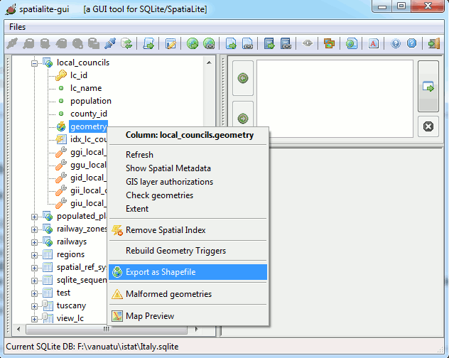
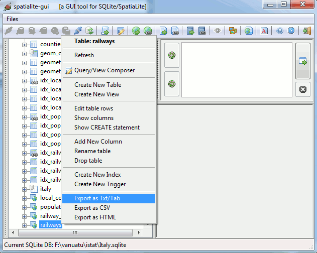
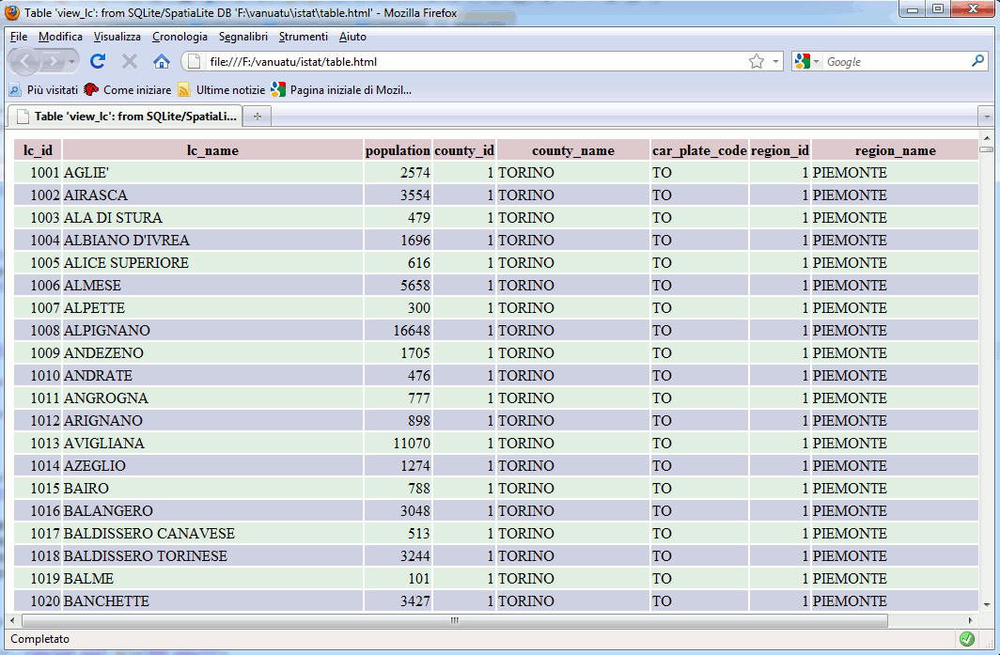
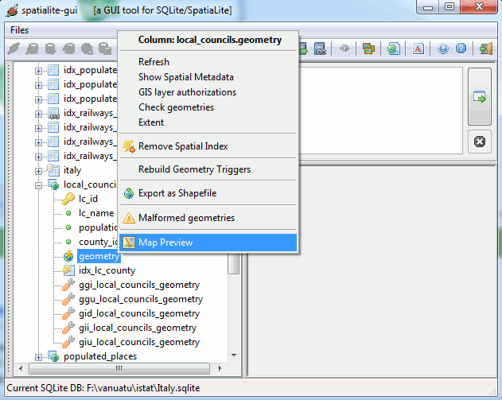
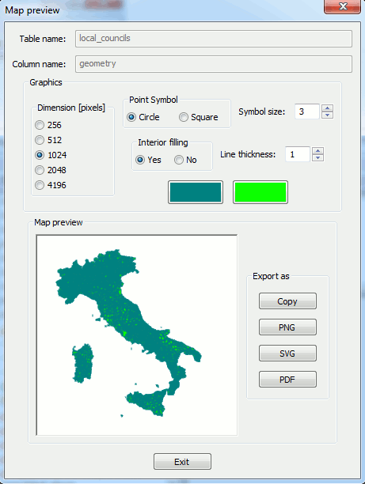
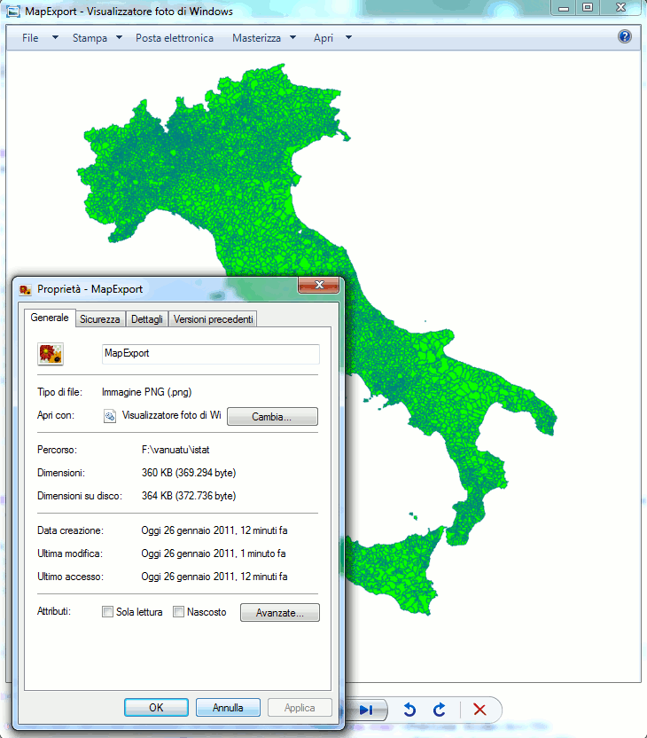
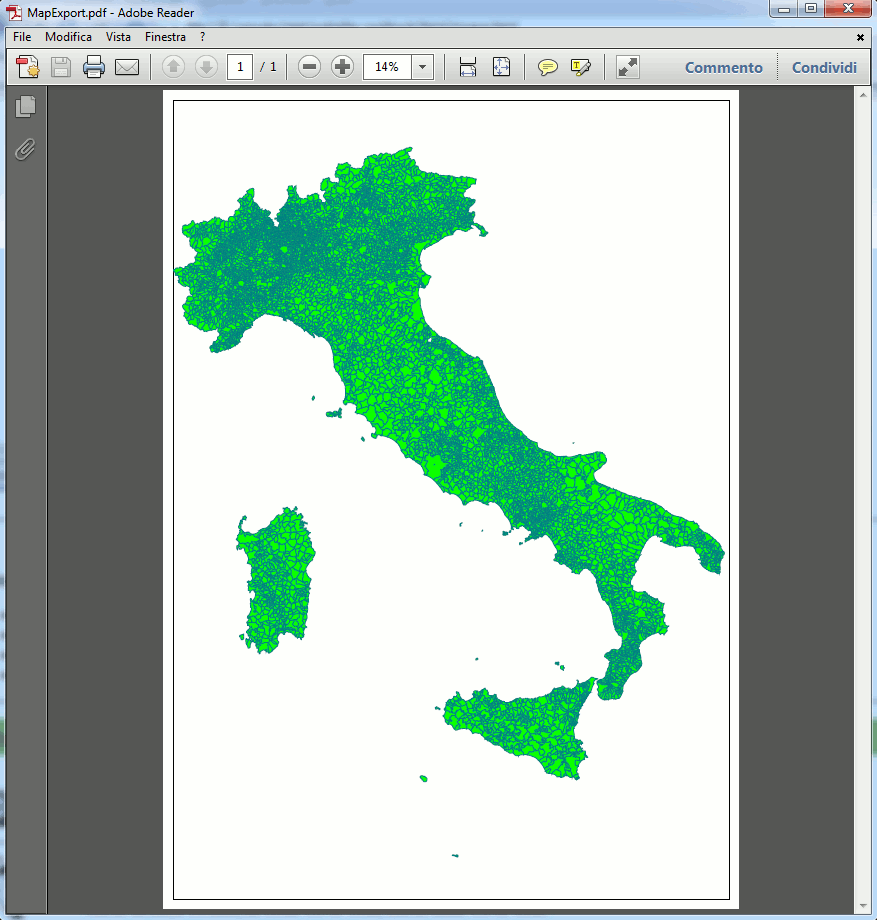
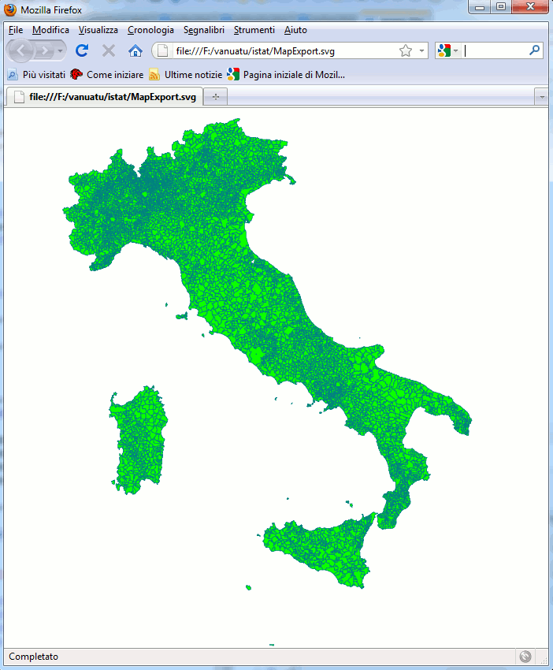

"font-size: 32pt">Importing / Exporting Shapefiles (DBF, TXT
...)
"HTML Tidy for HTML5 for Linux version 5.6.0" />
|
"font-size: 32pt">Importing / Exporting Shapefiles (DBF, TXT ...) |
| 2011 January 28 |
| Next |
| There are several
data formats that are absolutely widespread in the GIS professional world. specifically bounded to any specific proprietary software, they are not patent covered, and they are publicly documented). any GIS-related software, and can be safely used for data interchange purposes between different platforms and systems.
export. and widespread. e.g. the following ones:
i.e. some specific proprietary software or operating system is strictly required, there is no publicly available documentation, and/or they are patent covered. source packages) cannot support such closed formats. |
"font-size: 20pt">Shapefiles
SpatiaLite supports both import and export for Shapefiles:
VirtualShapefile table
"Courier New, monospace">spatialite_gui you'll find a Load Shapefile item in the main menu and in the toolbar.
"Courier New, monospace">spatialite CLI front-end you can use the
"Courier New, monospace">.loadshp macro
"Courier New, monospace">spatialite_tool shell
command
"Courier New, monospace">spatialite_gui you'll find an Export As
Shapefile item on the context menu corresponding to any Geometry column within the main tree-view.
"Courier New, monospace">spatialite CLI front-end you can use the
"Courier New, monospace">.dumpshp macro
"Courier New, monospace">spatialite_tool shell
command
spatialite_gui:
Shapefile import

spatialite_gui:
Shapefile export
|
"#808080">> color="#FFFFFF">spatialite counties.sqlite "Courier New, monospace" color="#FFFFFF"> "Courier New, monospace" color="#808080">SpatiaLite version ..: 2.4.0-RC5 Supported Extensions: 'VirtualShape' [direct Shapefile access] 'VirtualDbf' [direct DBF access] 'VirtualText' [direct CSV/TXT access] 'VirtualNetwork' [Dijkstra shortest path] 'RTree' [Spatial Index - R*Tree] 'MbrCache' [Spatial Index - MBR cache] 'VirtualFDO' [FDO-OGR interoperability] 'SpatiaLite' [Spatial SQL - OGC] color="#FFFFFF">.loadshp prov2010_s counties CP1252 23032 "#FFFFFF"> "#808080">the SPATIAL_REF_SYS table already contains some row(s) 'counties' 'MULTIPOLYGON', 'XY'); color="#FFFFFF">.headers on "Courier New, monospace" color="#FFFFFF"> "Courier New, monospace" color= "#808080">spatialite> "Courier New, monospace" color="#FFFFFF">SELECT * FROM counties LIMIT 5; "#FFFFFF"> "#808080">PK_UID|OBJECTID|COD_PRO|NOME_PRO|SIGLA|Geometry 1|1|1|Torino|TO| |
front-end: shapefile import
|
"#808080">spatialite> "Courier New, monospace" color="#FFFFFF">.dumpshp counties Geometry exported_counties CP1252 "Courier New, monospace" color="#FFFFFF"> "Courier New, monospace" color="#808080">======== 'exported_counties' 'POLYGON' NULL; color="#FFFFFF">.quit color="#FFFFFF"> color="#808080"> |
front-end: shapefile export
"#808080">> "#FFFFFF">spatialite_tool -i -shp prov2010_s -d db.sqlite -t counties -c CP1252 -s 23032 version: 3.7.4 'prov2010_s.shp' |
"#808080">> "#FFFFFF">spatialite_tool -e -shp exported_counties -d db.sqlite -t counties -g Geometry -c CP1252 version: 3.7.4 'counties' |
"font-size: 20pt">DBF files
SpatiaLite simply supports import for DBF files:
VirtualDbf table
"Courier New, monospace">spatialite_gui you'll find a Load DBF item in the main menu and in the toolbar.
"Courier New, monospace">spatialite CLI front-end you can use the
"Courier New, monospace">.loaddbf macro
"Courier New, monospace">spatialite_tool CLI
command
spatialite_gui:
DBF import
|
"#808080">> color="#FFFFFF">spatialite local_councils.sqlite color="#FFFFFF"> color="#808080">SpatiaLite version ..: 2.4.0-RC5 Supported Extensions: 'VirtualShape' [direct Shapefile access] 'VirtualDbf' [direct DBF access] 'VirtualText' [direct CSV/TXT access] 'VirtualNetwork' [Dijkstra shortest path] 'RTree' [Spatial Index - R*Tree] 'MbrCache' [Spatial Index - MBR cache] 'VirtualFDO' [FDO-OGR interoperability] 'SpatiaLite' [Spatial SQL - OGC] color="#FFFFFF">.loaddbf com2010_s.dbf local_councils CP1252 "#FFFFFF"> "#808080">======== 'local_councils' ======== color="#FFFFFF">.headers on "Courier New, monospace" color="#FFFFFF"> "Courier New, monospace" color= "#808080">spatialite> "Courier New, monospace" color="#FFFFFF">SELECT * FROM local_councils LIMIT 5 OFFSET 5000; "Courier New, monospace" color="#FFFFFF"> "Courier New, monospace" color= "#808080">PK_UID|OBJECTID|COD_REG|COD_PRO|COD_COM|PRO_COM|NOME_COM|NOME_ITA|NOME_TED 5001|4958|12|58|54|58054|Manziana|Manziana| Romano| color="#FFFFFF">.quit color="#FFFFFF"> color="#808080"> |
front-end: DBF import
"#808080">> "#FFFFFF">spatialite_tool -i -dbf com2010_s -d db.sqlite -t local_councils -c CP1252 version: 3.7.4 'com2010_s.dbf' |
"font-size: 20pt">TXT/CSV files
SpatiaLite supports both import and export for TXT/CSV files:
VirtualText table
"Courier New, monospace">spatialite_gui you'll find a Load TXT/CSV item in the main menu and in the toolbar.
"Courier New, monospace">spatialite_gui you'll find an Export As
TXT/CSV item on the context menu corresponding to any
Table within the main tree-view.
spatialite_gui:
TXT/CSV import

spatialite_gui:
TXT/CSV export
"font-size: 20pt">Other supported export formats
Using
"Courier New, monospace">spatialite_gui you can also export your data as:
spatialite_gui:
HTML export

HTML export sample

spatialite_gui:
PNG / PDF / SVG export (1)

spatialite_gui:
PNG / PDF / SVG export (2)

PNG export sample

PDF export sample

SVG export sample
| Next |

"CC-BY-SA logo" /> |
Author: Alessandro Furieri |
| This work is licensed under the
"http://creativecommons.org/licenses/by-sa/3.0/">Attribution-ShareAlike 3.0 Unported (CC BY-SA 3.0) license. |
|
|
|
|
 |
Permission is granted to copy, distribute and/or modify this
document under the terms of the Documentation License, Version 1.3 or any later version published by the Free Software Foundation; Texts. |